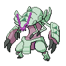

Golisopod-Mega appears on 68 of 2428 Pokémon Champions VGC tournament teams in the backtwo archive (3% usage, Reg M-C). The most common item is Golisopite (100% of Golisopod-Mega sets) and the most common ability is Emergency Exit. Its most frequent teammate is Pelipper (50% of its teams).
Open Golisopod-Mega in the full app →| Team | Player | Event | Result | Reg | Date |
|---|---|---|---|---|---|
| FWIEFISCH's Frankfurt Regional 2027 Top 16 Team | FWIEFISCH | Frankfurt Regional 2027 | 11th | M-C | 27 Sep 2026 |
| Ninjosh's Frankfurt Regional 2027 Top 128 Team | Joshua Miller | Frankfurt Regional 2027 | 102nd | M-C | 27 Sep 2026 |
| ck49's Baltimore Regional 2027 Runner Up Team | Aditya Subramanian | Baltimore Regional 2027 | Runner Up | M-C | 21 Sep 2026 |
| gocinema96's Baltimore Regional 2027 Top 16 Team | gocinema96 | Baltimore Regional 2027 | 10th | M-C | 21 Sep 2026 |
| doughboyvgc's Baltimore Regional 2027 Top 32 Team | doughboyvgc | Baltimore Regional 2027 | 21st | M-C | 21 Sep 2026 |
| canadia_tuxedo's Baltimore Regional 2027 Top 64 Team | canadia_tuxedo | Baltimore Regional 2027 | 43rd | M-C | 21 Sep 2026 |
| aricbxxiv's Baltimore Regional 2027 Team | aricbxxiv | Baltimore Regional 2027 | 179th | M-C | 20 Sep 2026 |
| benguins10's Baltimore Regional 2027 Team | benguins10 | Baltimore Regional 2027 | 241st | M-C | 20 Sep 2026 |
| seafoamshores' Baltimore Regional 2027 Team | seafoamshores | Baltimore Regional 2027 | 765th | M-C | 22 Sep 2026 |
| glitchy_potat's Baltimore Regional 2027 Team | glitchy_potat | Baltimore Regional 2027 | — | M-C | 21 Sep 2026 |
| zeen's Recreation of ck49's Baltimore Regional 2027 Runner Up Team | Shohei Kimura | - | — | M-C | 21 Sep 2026 |
| DaniVGC's VR September Challenge #2 Top 8 Team | DaniVGC | VR September Challenge #2 | 8th | M-C | 20 Sep 2026 |
Showing 12 of 68 teams. See all 68 in the full app →
Already running Golisopod-Mega and want the rest of the six? The team finder takes the Pokémon you have and ranks every tournament team by how many of your picks it matches. Or run the numbers in the damage calculator — Champions-accurate, with Mega Evolution, Stat Points, weather, terrain and spread reduction.